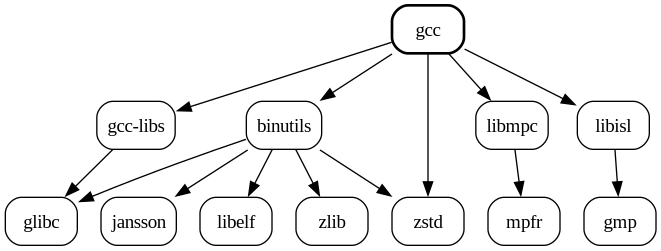

The Aura User Guide
Welcome to the User Guide for Aura, a multilingual package manager for Arch Linux.
Aura helps you install and manage software on your system. It provides all the
functionality that pacman does, plus more, including system sanity checks,
package analysis, and automated AUR package installation.
New to Aura? Check out Aura's Philosophy or just jump right into Installation!
Aura is licensed under the terms of the GPLv3.
💡 Tip: You can press
sat any time to search this book.
Contact
- Found an issue with Aura? Visit our Bug Tracker!
- Want to speak to an Aura dev directly? Visit our Discussions forum!
- Who translated Aura? These fine people from all over the world!
- Who made that neat logo? The designer Cristiano Vitorino!
- Who is the original author of Aura? Colin Woodbury from Canada!
The Aura Philosophy
The Aura project began in 2012 as an answer to the shortcomings of programs often called AUR helpers. Certain ground rules were set in the beginning to guide development. They are:
Aura is Pacman
Aura doesn't just mimic pacman; it is pacman. All pacman operations and
their sub-options are accepted, as-is.
Arch is Arch - AUR is AUR
Aura does not augment or alter pacman's commands in any way.
-S yields repository packages and only those. In Aura, the -A operation is
introduced for obtaining AUR packages. -A comes with sub-options you're used
to (-u, -s, -i, etc.) and adds new ones to enhance AUR interaction.
Downgradibility
Aura allows you to downgrade individual packages to previous versions with -C.
It also handles snapshots of your entire system, so that you can roll back whole
sets of packages when problems arise. The option -B will save a package state,
and -Br will restore a state you select. -Au also invokes a save
automatically.
Independence
Aura has its own configuration file, its own local package cache, and its own Metadata Server called the Faur. The Faur in particular helps reduce traffic to the main AUR server and allows us to provide unique package lookup schemes not otherwise available.
Multilingualism
English is the dominant language of computing and the internet. That said, it's natural that some people are going to be more comfortable working in their native language. From the beginning, Aura has been built with multiple-language support in mind, making it very easy to add new ones via the Project Fluent format.
Installation
Aura is software specific to Arch Linux. It should also work on Arch-derivatives like Manjaro, but would not be useful on any other Linux distribution.
There are several aura packages available. Aura was originally written in
Haskell, but a port to Rust
was released in 2024 as the 4.x series.
From the AUR
The Tagged Release
The recommended package is simply
named aura. It uses cargo to build a fresh binary on your machine, based on
releases made to Rust's crates.io.
git clone https://aur.archlinux.org/aura.git
cd aura
makepkg -s
sudo pacman -U <the-package-file-that-makepkg-produces>
The git-based Build
If instead you'd like to directly track updates to Aura's master branch, install
the git variant:
git clone https://aur.archlinux.org/aura-git.git
cd aura-git
makepkg -s
sudo pacman -U <the-package-file-that-makepkg-produces>
The Prebuilt Binary
Finally, if you don't wish to build Aura yourself or want to avoid any trace of
Rust tooling on your machine, there is a prebuilt
binary of Aura for x86_64
machines:
git clone https://aur.archlinux.org/aura-bin.git
cd aura-bin
makepkg -s
sudo pacman -U <the-package-file-that-makepkg-produces>
Building from Source
If you already have Rust tooling installed on your machine and/or wish to help develop Aura, you can also install it manually:
git clone https://github.com/fosskers/aura.git
cd aura/rust
cargo install --path aura-pm
This will build and install the binary to /home/YOU/.cargo/bin/.
Keep in mind that this variant of Aura won't be tracked in pacman's database,
and so it will be easier to miss updates. It also does not install completions
or other documentation files like manpages.
Post-installation
The first thing you should do is run check:
aura check
This will scan your system for irregularities and suggest fixes. Second, you should generate an Aura config file:
aura conf --gen > ~/.config/aura/config.toml
Consider setting the language field here, if you wish to use Aura in a
language other than English. The available language codes are viewable via:
aura stats --lang
Aura will also automatically detect your locale via LANG, so you only need to
set language if you want a custom combination of system language and Aura
language.
Usage
💡 Did you know? Aura has a manpage with every flag explained in detail. Check it out in your terminal with
man aura.
❗ Attention: As of the 4.x series,
sudois no longer necessary when running Aura. When escalated privileges are required, Aura will automatically prompt you.
Pacman Commands
First and foremost, Aura is compatible with pacman. This gives us access to
the following Commands:
-S: Search and install official packages.
> aura -S firefox
-Q: Query the database of installed packages.
> aura -Qi firefox
Name : firefox
Version : 127.0.2-1
Description : Fast, Private & Safe Web Browser
... etc ...
-R: Remove installed packages.
> aura -R firefox
-U: Install a manually built package.
> makepkg
... building ...
> aura -U aura-4.0.0-1-x86_64.pkg.tar.xz
-D: Interact with Pacman's database directly.
> aura -Dk
No database errors have been found!
-F: Make queries regarding files owned by packages.
> aura -Fl firefox
firefox usr/
firefox usr/bin/
firefox usr/bin/firefox
firefox usr/lib/
firefox usr/lib/firefox/
firefox usr/lib/firefox/Throbber-small.gif
firefox usr/lib/firefox/application.ini
... etc ...
-T: Check if a dependency is satisfied.
> aura -T firefox "qt>100"
qt>100
See the next page for a list of common Pacman idioms.
Aura Commands
Aura also provides a number of new Commands:
-A: Search and install packages from the AUR.
> aura -A qlot
-B: Create and restore snapshots of installed packages.
> aura -B
aura :: Saved package state.
-C: Downgrade installed packages.
> aura -C qlot
aura :: What version of qlot do you want?
0) 1.5.6-1
1) 1.5.1-1
>>
-L: Search and inspect the ALPM log.
> aura -Li firefox
Name : firefox
First Install : 2016-05-03 08:46
Upgrades : 176
Recent Actions :
[2024-02-24T07:29:46+0900] [ALPM] upgraded firefox (122.0.1-1 -> 123.0-1)
[2024-03-11T16:42:37+0900] [ALPM] upgraded firefox (123.0-1 -> 123.0.1-1)
[2024-03-24T15:03:33+0900] [ALPM] upgraded firefox (123.0.1-1 -> 124.0.1-1)
-O: Handle "orphans" - dependencies whose parent package is no longer installed.
> aura -O
asar 3.2.8-1
check: Validate your system.
> aura check
aura :: Validating your system.
aura :: Environment
[✓] locale -a contains LANG value? (en_US.UTF-8)
[✓] Aura is localised to your LANG?
[✓] EDITOR variable set?
[✓] EDITOR value (emacs) is executable?
[✓] Java environment set?
... etc. ...
conf: Inspect or generate Aura configuration.
> aura conf --gen > ~/.config/aura/config.toml
deps: View the dependency graph of given packages.
> aura deps gcc --reverse --optional --limit=3 --open

free: List installed packages with potentially non-free software licenses.
> aura free
adobe-source-code-pro-fonts: custom
aspell-en: custom
blas: custom
boost: custom
boost-libs: custom
cantarell-fonts: custom:SIL
... etc. ...
stats: View statistics about your machine and Aura itself.
> aura stats
Host : yumi
User : colin
Distribution : Arch Linux
Editor : emacs
Installed packages : 1144
Pacman Package Cache : 7.05GiB
Aura Package Cache : 1.29GiB
Aura Build Cache : 6.49GiB
/tmp Directory : 11.31MiB
thanks: Credit to the Pacman team, Aura's authors, and Aura's translators.
Aura-as-Pacman
aura can be used in place of pacman in all situations. At the very least,
this is two fewer letters to type!
Below are some common pacman idioms for managing your system. The list is a
handy reference but not exhaustive. For everything that pacman is capable of,
see man pacman.
To find out how to use Aura to interact with the AUR, continue to the next page.
Package Installation and Updates
Install an official package
aura -S firefox
💡 Note: Unlike with
pacman, prefixing withsudois not necessary for "admin" actions. Aura knows whensudois necessary and will prompt you.
Update all official packages
The classic command.
aura -Syu
Install a package built with makepkg
aura -U foobar-1.2.3-1-x86_64.pkg.tar.xz
Removing Packages
The package and all unneeded dependencies
From the manpage of pacman:
This operation is recursive and analogous to a backwards
--syncoperation, and it helps keep a clean system without orphans.
aura -Rsu firefox
The package and everything that depends on it
Use this with care. See man pacman for more details.
aura -Rcu firefox
Querying your System
Searching an exact package
aura -Qi firefox
Searching a local package by description
> aura -Qs browser
local/firefox 127.0.2-1
Fast, Private & Safe Web Browser
local/mathjax 3.2.2-1
An open source JavaScript display engine for mathematics that works in all modern browsers
local/qt6-webengine 6.7.2-1 (qt6)
Provides support for web applications using the Chromium browser project
Producing a list of installed packages
> aura -Q
aalib 1.4rc5-18
abcl 1.9.2-1
abseil-cpp 20240116.2-2
acl 2.3.2-1
... etc ...
Discovering what package owns a certain file
> aura -Qo firefox
/usr/bin/firefox is owned by firefox 127.0.2-1
Discovering which files are brought in by a package
> aura -Ql firefox
firefox /usr/
firefox /usr/bin/
firefox /usr/bin/firefox
firefox /usr/lib/
firefox /usr/lib/firefox/
firefox /usr/lib/firefox/Throbber-small.gif
firefox /usr/lib/firefox/application.ini
... etc ...
You can use grep to filter what you're looking for:
> aura -Ql firefox | grep bin
firefox /usr/bin/
firefox /usr/bin/firefox
firefox /usr/lib/firefox/firefox-bin
Listing all installed "foreign" packages
> aura -Qm
abcl 1.9.2-1
anki 2.1.66-1
babashka-bin 1.3.191-1
bashate 2.1.1-1
ccextractor 0.94-3
ccl 1.12.2-4
... etc ...
Clearing your Package Cache
Pacman stores its built packages in /var/cache/pacman/pkg/. This directory can
grow quite large, but the following commands can help selectively clear it.
💡 Tip: The Aura command
-Ccoffers additional control over clearing the cache, and targets Aura's cache as well.
Removing the tarballs of uninstalled packages
aura -Sc
Removing all tarballs
aura -Scc
Installing AUR Packages
Let's walk through the full process of installing an AUR package. This will show us how to discover packages, install them, and upgrade them.
💡 Tip: Just want to update all your AUR packages? Aura's author uses
aura -Au. Remember, no need to callsudoyourself.
💡 Tip: For the full list of all options with detailed descriptions, see
man aura.
Installing a Package
Searching for a Package
Let's say we want to install a package that can render .md README files for
us. First, we search the AUR for candidates:
> aura -As readme
aur/python-grip 4.6.1-1 (22 | 0.00)
Preview GitHub Markdown files like Readme locally before committing them
aur/python-grip-git 4.5.2-1 (15 | 0.00)
Preview GitHub Markdown files like Readme locally before committing them.
aur/ruby-github-markup 4.0.2-1 (4 | 0.00)
The code GitHub uses to render README.markup
aur/k810-conf 0.1-9 (3 | 0.00)
Logitech K810 Keyboard Configurator, change function keys (F-keys) behavior. Read USAGE at https://aur.archlinux.org/cgit/aur.git/tree/README.md?h=k810-conf
aur/cargo-readme 3.3.1-1 (3 | 0.24)
A cargo subcommand to generate README.md content from doc comments
... etc ...
By default, results are ordered by their vote count. If -As filled the screen
and we only wish to see a few results, we can filter with --limit:
> aura -As readme --limit 3
aur/python-grip 4.6.1-1 (22 | 0.00)
Preview GitHub Markdown files like Readme locally before committing them
aur/python-grip-git 4.5.2-1 (15 | 0.00)
Preview GitHub Markdown files like Readme locally before committing them.
aur/ruby-github-markup 4.0.2-1 (4 | 0.00)
The code GitHub uses to render README.markup
--abc can be used to sort alphabetically instead.
Scrutinizing a Package
Alright, python-grip looks good. Let's take a closer look...
> aura -Ai python-grip
Repository : aur
Name : python-grip
Version : 4.6.1-1
AUR Status : Up to Date
Maintainer : pancho
Project URL : https://github.com/joeyespo/grip
AUR URL : https://aur.archlinux.org/packages/python-grip
License : MIT
Groups :
Provides :
Depends On : python python-docopt python-flask python-markdown python-path-and-address python-pygments python-requests
Make Deps : python-setuptools
Optional Deps :
Check Deps :
Votes : 22
Popularity : 0.00
Description : Preview GitHub Markdown files like Readme locally before committing them
Keywords :
Submitted : 2017-02-09
Updated : 2022-04-17
Does the PKGBUILD look alright?
> aura -Ap python-grip
# Maintainer: pancho horrillo <pancho at pancho dot name>
# Contributor: Clayton Craft <clayton at craftyguy dot net>
pkgname=python-grip
pkgver=4.6.1
pkgrel=1
pkgdesc="Preview GitHub Markdown files like Readme locally before committing them"
arch=('any')
license=('MIT')
url="https://github.com/joeyespo/grip"
depends=('python' 'python-docopt' 'python-flask' 'python-markdown'
'python-path-and-address' 'python-pygments' 'python-requests')
makedepends=('python-setuptools')
source=("$pkgname-$pkgver.tar.gz::https://github.com/joeyespo/grip/archive/v$pkgver.tar.gz")
sha256sums=('6bc3883f63395c566101187bc1f1d103641c99913b7122f942d56e108e649d83')
package() {
cd grip-$pkgver
python setup.py install --root="$pkgdir" --optimize=1
install -Dm644 LICENSE "$pkgdir"/usr/share/licenses/$pkgname/LICENSE
}
Nothing nefarious here.
💡 Tip: It's important to confirm the content of the PKGBUILD like this, as these are raw Bash commands that will be executed on your system during the build process.
A Normal Install
> aura -A python-grip
aura :: Determining dependencies...
aura :: Repository dependencies:
python-docopt
aura :: AUR packages:
python-grip
python-path-and-address
aura :: Proceed? [Y/n]
... pacman output ...
aura :: Preparing build directories...
aura :: Building python-path-and-address...
... makepkg output ...
aura :: Done.
A few things to note:
python-griphas both official and AUR dependencies. These have to be built and installed in a specific order forpython-gripto even build.- Under the hood, Aura calls
makepkgto drive the build andpacmanto finalise the installation. - If two or more packages don't depend on each other, they'll be built one after another and installed at the same time. This avoids needless user prompting.
💡 Tip: Aura used to have an option
-xto exposemakepkgoutput. This is now the default behaviour.
Automatically Removing makedepends
There's a difference between the dependencies that a package needs to build
and the dependencies it needs to run. We call the former makedepends. Once a
package is installed, we no longer need its makedepends sitting around on our
machine. Adding -a to -A will automatically clear them out:
> aura -Aa grimshot
aura :: Determining dependencies...
aura :: Repository dependencies:
scdoc
aura :: AUR packages:
grimshot
aura :: Proceed? [Y/n]
... the usual ...
aura :: Done.
checking dependencies...
Packages (1) scdoc-1.11.3-1
Total Removed Size: 0.03 MiB
:: Do you want to remove these packages? [Y/n]
scdoc was only necessary during the build, so we're prompted to uninstall it.
If you'd like to turn this behaviour on permanently, you can set it within config:
[aur]
delmakedeps = true
Altering the PKGBUILD Before Building
Sometimes you want to change something specific about how a package is built.
Without a tool like Aura, you'd clone the package from the AUR, edit the
PKGBUILD, and then run makepkg, handling dependencies yourself.
Aura's --hotedit flag will let you edit a PKGBUILD on-the-fly. In the example
below, I add echo "I CHANGED THE PKGBUILD" to the build commands:
> aura -Aa python-grip --hotedit
aura :: Determining dependencies...
... the usual ...
aura :: Building python-grip...
aura :: Edit the PKGBUILD? [Y/n]
... Your EDITOR opens, and you save your changes to the real PKGBUILD file ...
==> Making package: python-grip 4.6.1-1 (Sat 13 Jul 2024 07:08:37 AM JST)
==> Starting package()...
I CHANGED THE PKGBUILD
... normal makepkg output, etc ...
Some things to note:
- If
.installor.patchfiles are present,--hoteditwill also prompt you to edit those. - You can change the dependency lists, but this will only affect
makepkg's dependency resolution, not Aura's. If you want Aura to skip dependency checks completely because you know you're right (and you knowmakepkgwill succeed after you hotedit), use the--skipdepcheckflag. See issue #605 for more information. - If you want customizations to a PKGBUILD to apply to all future builds of a
package, it's recommended that you maintain a separate PKGBUILD and call
makepkgyourself.
If you'd like to always be prompted for hoteditting, you can set it within config:
[aur]
hotedit = true
PKGBUILD Analysis
If requested, Aura will run Shellcheck on PKGBUILDs to check for oddities:
> aura -A goverlay-git --shellcheck
... the usual ...
aura :: Building goverlay-git...
In PKGBUILD line 32:
for i in "${pkgname%-git}.lpi"; do
^-------------------^ SC2066 (error): Since you double quoted this, it will not word split, and the loop will only run once.
For more information:
https://www.shellcheck.net/wiki/SC2066 -- Since you double quoted this, it ...
aura :: Proceed? [Y/n]
If you'd like to always run shellcheck this way, you can set it within config:
[aur]
shellcheck = true
Jailed Building via pkgctl build
For extra security, you can build packages in a chroot. This ensures that the
build process will not affect your existing filesystem. For the moment, this
option is gated by configuration; no CLI flag is available:
[aur]
chroot = ["fortls", "timelineproject-hg"]
This means that when these particular packages are built, it will be done in a
chroot. Transitive AUR dependencies will be injected properly into the build
environment.
Using a "build user"
The flags --build and --builduser can be used to alter where the building
occurs and under which user it occurs, respectively. While usually not necessary
by default, these can be useful for system administrators who want stricter
control.
Blindly Accepting all Prompts
Tired of pressing the Enter key? Or maybe you've automated aura into a
script. In these cases, you may want to accept all prompts automatically.
pacman exposes the --noconfirm flag for this, which also affects Aura.
Updating your AUR Packages
aura -Au is the standard command, and is run without sudo.
> aura -Au
aura :: Fetching package information...
aura :: Comparing package versions...
aura :: AUR packages to upgrade:
ghcup-hs-bin :: 0.1.22.0-1 -> 0.1.30.0-1
tic-80-git :: r2633.687fb340-1 -> r2883.3cf27c5e-1
yed :: 1:3.23.2-1 -> 1:3.24-1
aura :: Determining dependencies...
aura :: Repository dependencies:
... redacted ...
aura :: AUR packages:
ghcup-hs-bin
tic-80-git
yed
aura :: Proceed? [Y/n]
The options that apply to normal -A, like -a and --hotedit, also apply
here. Of course, it's simplest to set those in config if you know your
preferences. See man aura or aura -Ah for more options.
Displaying PKGBUILD Changes
Hey wait a minute, aren't we supposed to check PKGBUILDs before building
packages? -k will show us any changes that were made to a PKGBUILD compared to
the version we have installed:
> aura -Auk
aura :: Fetching package information...
aura :: Comparing package versions...
aura :: AUR packages to upgrade:
ghcup-hs-bin :: 0.1.22.0-1 -> 0.1.30.0-1
yed :: 1:3.23.2-1 -> 1:3.24-1
aura :: Determining dependencies...
aura :: AUR packages:
ghcup-hs-bin
yed
aura :: Proceed? [Y/n]
aura :: Preparing build directories...
aura :: Building yed...
aura :: Display diffs of build files? [Y/n]
diff --git a/.SRCINFO b/.SRCINFO
index bc810a7..32f1f1f 100644
--- a/.SRCINFO
+++ b/.SRCINFO
@@ -1,6 +1,6 @@
pkgbase = yed
pkgdesc = Very powerful graph editor written in java
- pkgver = 3.23.2
+ pkgver = 3.24
pkgrel = 1
epoch = 1
url = http://www.yworks.com/en/products_yed_about.html
@@ -9,11 +9,11 @@ pkgbase = yed
license = custom
depends = hicolor-icon-theme
depends = java-runtime
- source = https://www.yworks.com/resources/yed/demo/yEd-3.23.2.zip
+ source = https://www.yworks.com/resources/yed/demo/yEd-3.24.zip
source = yed.desktop
source = yed
source = graphml+xml-mime.xml
- sha256sums = 4f96611718df696de2f33eeb2cd78bfbbdacce52390afea8d00441b6fb175e20
+ sha256sums = 842909f6e4c15399b660f316056499e63e931f95ade43d850045d852d3128947
sha256sums = cc6957cde6eba0d82ea523b0257f8c91fd1e330a1e2ad7d64890e48a2450aa98
sha256sums = 731b54c6e731704efe9847d78e2df474d59042452ace29d2786d76891295249e
sha256sums = e751b69ed8a25faf46d4e4016ed8f1774abc88679067934a6081348e3d6fc332
diff --git a/PKGBUILD b/PKGBUILD
index f9ea04e..cb06126 100644
--- a/PKGBUILD
+++ b/PKGBUILD
@@ -10,7 +10,7 @@
# https://github.com/michaellass/AUR
pkgname=yed
-pkgver=3.23.2
+pkgver=3.24
pkgrel=1
epoch=1
pkgdesc='Very powerful graph editor written in java'
@@ -22,7 +22,7 @@ source=("https://www.yworks.com/resources/yed/demo/yEd-${pkgver}.zip"
'yed.desktop'
'yed'
'graphml+xml-mime.xml')
-sha256sums=('4f96611718df696de2f33eeb2cd78bfbbdacce52390afea8d00441b6fb175e20'
+sha256sums=('842909f6e4c15399b660f316056499e63e931f95ade43d850045d852d3128947'
'cc6957cde6eba0d82ea523b0257f8c91fd1e330a1e2ad7d64890e48a2450aa98'
'731b54c6e731704efe9847d78e2df474d59042452ace29d2786d76891295249e'
'e751b69ed8a25faf46d4e4016ed8f1774abc88679067934a6081348e3d6fc332')
aura :: Proceed? [Y/n]
Once again, nothing evil-looking here. If you'd like to always see diffs like this, you can set it within config:
[aur]
diff = true
Including *-git Packages
The AUR has many packages postfixed with -git, -svn, etc. These typically
pull straight from the master branch of some code respository, and so
comparing version numbers to detect updates doesn't always work.
--git will consider all such packages for updates:
> aura -Au --git
aura :: Fetching package information...
aura :: Comparing package versions...
aura :: AUR packages to upgrade:
ghcup-hs-bin :: 0.1.22.0-1 -> 0.1.30.0-1
yed :: 1:3.23.2-1 -> 1:3.24-1
aura :: VCS packages to rebuild:
clasp-cl-git
libmgba-git
mgba-qt-git
timelineproject-hg
aura :: Determining dependencies...
aura :: Repository dependencies:
qt6-tools
aura :: AUR packages:
clasp-cl-git
ghcup-hs-bin
mgba-git
timelineproject-hg
yed
aura :: Proceed? [Y/n]
If you'd like to always consider such packages with -u, you can set it within
config:
[aur]
git = true
Package Storage Locations
This page explains all important filepaths for Aura. Build paths can be
configured in ~/.config/aura/config.toml.
Where are packages built?
By default, packages are built within ~/.cache/aura/builds/. Were a package
specified in the chroot list in config, then it will instead be built in a
chroot.
Where are packages stored?
Once built, all packages are sent to Aura's cache: ~/.cache/aura/cache/.
This directory can grow quite large, but can be cleaned with
-Cc. You can use aura stats to view the sizes of
various Aura-related directories.
What other filepaths are there?
Aura stores clones of known AUR packages in ~/.cache/aura/packages/, and saved
package set states in ~/.cache/aura/snapshots/.
Aura also reads your pacman and makepkg configuration, which are generally
expected to be at /etc/pacman.conf and /etc/makepkg.conf respectively, but
it will respect the usual environment variables that alter those paths.
Downgrading Packages
The -C command is used to interact with the Package Cache.
Searching the Cache
-Cs shows us what's available in the cache.
> aura -Cs firefox
/var/cache/pacman/pkg/firefox-127.0.2-1-x86_64.pkg.tar.zst
/var/cache/pacman/pkg/firefox-126.0.1-1-x86_64.pkg.tar.zst
We can get more intelligent output via -Ci:
> aura -Ci firefox
Name : firefox
Latest : 127.0.2-1 [installed]
Created : 2024-06-29 04-12-38
Signature : Yes
Tarball Size : 69.01MiB
Available Versions : 127.0.2-1, 126.0.1-1
Downgrading
Let's say the newest version of some package is somehow broken. Let's downgrade:
> aura -C firefox
aura :: What version of firefox do you want?
0) 127.0.2-1
1) 126.0.1-1
>>> 1
loading packages...
warning: downgrading package firefox (127.0.2-1 => 126.0.1-1)
resolving dependencies...
looking for conflicting packages...
Packages (1) firefox-126.0.1-1
Total Installed Size: 239.53 MiB
Net Upgrade Size: -1.34 MiB
:: Proceed with installation? [Y/n]
In fact, -C works even if we no longer have that package installed. All that
matters is whether you have a copy of the old version in your cache.
Cleaning the Cache
-Cc can help keep our cache small.
> aura -Cc 2
aura :: Current cache size: 8.31GiB
aura :: 2 of each package file will be kept. The rest will be deleted.
aura :: Proceed? [Y/n]
aura :: 34.45MiB freed.
Managing Orphan Packages
Orphan packages are those marked as Installed as a dependency for another package, but which are missing the parent package that depended on them. This
can occur when a package with many dependencies is installed and then later
removed via a single -R (without -su). Or when a package is upgraded, and
the new version no longer requires a certain dependency.
In these cases, the dependencies are left behind and becomes orphans, chewing up disk space.
The -O command can help deal with these.
What packages have become orphans?
> aura -O
python-docopt
python-flask
python-path-and-address
Weird! Are they really not needed?
> aura -Qi python-docopt
Name : python-docopt
Version : 0.6.2-7
Description : Pythonic argument parser, that will make you smile
Architecture : any
URL : https://github.com/docopt/docopt
Licenses : MIT
Groups : None
Provides : None
Depends On : python
Optional Deps : None
Required By : None
Optional For : None
Conflicts With : None
Replaces : None
Installed Size : 83.17 KiB
Packager : Evangelos Foutras <evangelos@foutrelis.com>
Build Date : Thu Oct 31 09:48:34 2019
Install Date : Fri Jun 12 09:43:12 2020
Install Reason : Installed as a dependency for another package
Install Script : No
Validated By : Signature
Sure enough, Required By: None.
Uninstalling Orphans
Clearing orphans doesn't just save us space now - it saves the space of all future upgrades we won't have to download anymore.
-Oj will uninstall all such packages. Under the hood, it passes -Rsu to
pacman, hence there are more packages to uninstall than first appeared in the
-O list above.
> aura -Oj
checking dependencies...
Package (5) Old Version Net Change
python-itsdangerous 1.1.0-4 -0.11 MiB
python-werkzeug 1.0.1-2 -2.13 MiB
python-docopt 0.6.2-7 -0.08 MiB
python-flask 1.1.2-2 -0.80 MiB
python-path-and-address 2.0.1-1 -0.01 MiB
Total Removed Size: 3.12 MiB
:: Do you want to remove these packages? [Y/n]
Adopting an Orphan
Changing a package's install reason from "dependency" to "explicitly installed"
is possible via pacman alone, but Aura offers a shorthand:
> aura -Oa python-path-and-address
python-path-and-address: install reason has been set to 'explicitly installed'
Forgotten Top-level Packages
The dual concept of the "orphan" would be the "elderly"; in this case, top-level packages which aren't depended on by anything else.
> aura -Oe
abcl 1.9.2-1
alsa-utils 1.2.12-1
anki 2.1.66-1
aspell-en 2020.12.07-1
babashka-bin 1.3.191-1
base 3-2
base-devel 1-1
... etc ...
If you notice anything here that you don't remember installing or that you don't
need anymore, you can remove it. Consider also aura check for a list of such
top-level packages that haven't been updated in the past year.
Package Set Snapshots
Arch Linux (and Linux in general) used to have a reputation of breaking every
time packages were upgraded. Around 2010, Aura's author used to run Arch on a
Macbook, and such catastrophic breakage did occur every six months or so. But
fast-forward to the present day, and such problems are rare. Even so, the idea
of "whole system rollback" is spreading, and even since those early Arch-on-Mac
days, Aura has had the -B Command for saving and restoring entire package
sets.
Saving a Package Set
> aura -B
aura :: Saved package state.
This saves a file like 2024.07(Jul).09.21.07.02.json to
~/.cache/aura/snapshots/. If we take a peek inside, we see:
{
"time": [2024, 196, 3, 54, 43, 311735304, 0, 0, 0],
"pinned": false,
"packages": {
"libmm-glib": "1.22.0-1",
"fcitx5-mozc": "2.26.4632.102.g4d2e3bd-2",
"graphviz": "11.0.0-1",
"mailcap": "2.1.54-1",
"libsm": "1.2.4-1",
"containerd": "1.7.18-1",
... etc ...
Simple enough - a list of all installed packages with their versions. We'll talk
about pinned below.
These files are in JSON format in case other tools wish to read them.
Restoring a Package Set
Let's say I removed some packages a few days ago but am now having issues, and I want to rollback to the system state I had at the time. Let's see that happen:
> aura -Br
aura :: Select a snapshot to restore:
0) 2024-07-09 21-07-02
1) 2024-07-12 22-56-43
2) 2024-07-12 22-59-18
3) 2024-07-12 23-04-25
4) 2024-07-12 23-19-29 [pinned]
5) 2024-07-14 03-54-37
6) 2024-07-14 03-54-43
>>> 0
loading packages...
resolving dependencies...
looking for conflicting packages...
Packages (21) asar-3.2.8-1 cdparanoia-10.2-9 grimshot-1.9-1 gst-plugins-base-1.24.5-2
kirigami2-5.116.0-1 meson-1.4.1-1 mgba-qt-git-0.11.0.r8251.6853080b9-1
mgba-sdl-0.10.3-2 musl-1.2.5-1 neofetch-7.1.0-2 ninja-1.12.1-1 pkgstats-3.2.18-1
python-tqdm-4.66.4-1 qt5-graphicaleffects-5.15.14-1 qt5-multimedia-5.15.14+kde+r2-1
qt5-quickcontrols-5.15.14-1 qt5-quickcontrols2-5.15.14+kde+r5-1 typst-1:0.11.1-1
webui-2.5.0+beta.1+14+gb65608df-1 xf86-input-libinput-1.4.0-1 xorg-server-21.1.13-1
Total Installed Size: 86.50 MiB
:: Proceed with installation? [Y/n]
This reinstalls the old versions of those packages and removes anything currently installed that wasn't at the time of the snapshot.
Clearing out old Saved States
Especially if you have automatic state-saving with -Au turned on, these
snapshot files can build up quickly. You might not even have most of the
packages necessary to roll back to those early states if you've recently used
-Cc. Let's clear out the old, unusable ones:
> aura -Bc
aura :: Remove stale snapshots? [Y/n]
aura :: Done.
"Stale" refers to snapshots for which the corresponding tarball of some package
no longer exists on your system. You can confirm the overall state of your
snapshots with aura check.
If you have edited a snapshot file to change the pinned field to true, then
-Bc will never remove it.
Log Interaction
Pacman keeps an extensive log file, but doesn't really offer any way to interact
with it. Aura has the -L command to perform some interesting lookups.
View the Log File
To print the content of the entire log file:
> aura -L | bat
[2016-05-03 04:13] [PACMAN] Running 'pacman -r /mnt -Sy --cachedir=/mnt/var/cache/pacman/pkg base base-devel'
[2016-05-03 04:13] [PACMAN] synchronizing package lists
[2016-05-03 04:26] [ALPM] transaction started
[2016-05-03 04:26] [ALPM] installed linux-api-headers (4.4.1-1)
[2016-05-03 04:26] [ALPM] installed tzdata (2016d-1)
[2016-05-03 04:26] [ALPM] installed iana-etc (20160314-1)
[2016-05-03 04:26] [ALPM] installed filesystem (2015.09-1)
[2016-05-03 04:26] [ALPM] installed glibc (2.23-1)
... etc ...
A blast from the past! Looks like I set up Arch on this laptop in 2016.
And what was the most recent thing that happened (pressing G)?
... etc ...
[2024-07-14T13:53:16+0900] [ALPM] transaction completed
[2024-07-14T13:53:16+0900] [ALPM] running '30-systemd-daemon-reload-system.hook'...
[2024-07-14T13:53:16+0900] [ALPM] running '30-systemd-update.hook'...
[2024-07-14T13:53:16+0900] [ALPM] running 'gtk-update-icon-cache.hook'...
[2024-07-14T13:53:16+0900] [ALPM] running 'update-desktop-database.hook'...
Search the Log File
-Ls returns all log lines that match a given string:
> aura -Ls firefox
[2016-05-03 08:45] [PACMAN] Running 'pacman -S firefox'
[2016-05-03 08:46] [ALPM] installed firefox (46.0-2)
[2016-05-07 11:09] [ALPM] upgraded firefox (46.0-2 -> 46.0.1-1)
[2016-06-19 14:30] [ALPM] upgraded firefox (46.0.1-1 -> 47.0-1)
[2016-06-23 15:46] [ALPM] upgraded firefox (47.0-1 -> 47.0-2)
[2016-07-25 07:25] [ALPM] upgraded firefox (47.0-2 -> 47.0.1-1)
... etc ...
Query all Logs for a Package
More interesting than just a raw search is -Li:
> aura -Li firefox
Name : firefox
First Install : 2016-05-03 08:46
Upgrades : 176
Recent Actions :
[2024-02-24T07:29:46+0900] [ALPM] upgraded firefox (122.0.1-1 -> 123.0-1)
[2024-03-11T16:42:37+0900] [ALPM] upgraded firefox (123.0-1 -> 123.0.1-1)
[2024-03-24T15:03:33+0900] [ALPM] upgraded firefox (123.0.1-1 -> 124.0.1-1)
[2024-06-03T05:18:15+0900] [ALPM] upgraded firefox (124.0.1-1 -> 126.0.1-1)
[2024-06-29T13:17:29+0900] [ALPM] upgraded firefox (126.0.1-1 -> 127.0.2-1)
Neat! I often use this to check the last time I updated a particular package.
Dependency Analysis
Sometimes you might notice a certain package that you don't recognize
nonetheless being updated, and you'd like to know where it came from. Or perhaps
you'd like to know what the affect of installing some package might be, in terms
of dependency load. The output of -Qi and -Si includes dependency
information, but only one layer deep in either direction. In these cases, aura deps is a useful command.
By default it writes a .png to the current directory, but with --open will
output to /tmp and open the image in the default viewer instead. If the image
isn't opening in the viewer you prefer, you can alter it in
~/.config/mimeapps.list. For instance:
[Default Applications]
image/png=swayimg.desktop
The available .desktop entries can be found in /usr/share/applications/.
Displaying Dependencies
> aura deps sbcl --open

Looks like sbcl is fairly self-contained. Many packages are not, and their
output needs to be limited to render usefully. For instance...
> aura deps gcc --open

Ack! Let's try again, but with --limit this time:
> aura deps gcc --limit=3 --open

Display Reverse Dependencies
Wait a minute, what's this gcc thing anyway? Doesn't sound very important. I
want it off my system! Let's see...
> aura deps gcc --reverse --open

...nevermind. Note that cyan nodes indicate AUR packages.
Configuring Aura
For certain settings we use all the time (e.g. language, build paths, etc.),
Aura is configurable via ~/.config/aura/config.toml in the TOML
format. This file, with sensible defaults,
can be generated via:
aura conf --gen > ~/.config/aura/config.toml
Here are the specifics of each field.
General Settings
Governed within the [general] section.
| Field | Type | Purpose |
|---|---|---|
cpus | int | Affects parallelism in various algorithms. |
editor | string | The editor opened with --hotedit, etc. |
elevator | string | A sudo-like program to elevate privileges during installation. |
language | string | A code to specify the human language of Aura's output messages. |
noconfirm | bool | Automatically accept all prompts. |
See aura stats --lang for available language codes.
AUR Package Building
Governed within the [aur] section.
| Field | Type | Purpose |
|---|---|---|
build | string | A path to the build cache Aura should use. |
cache | string | A path in which to store built package tarballs. |
clones | string | A path in which to clone package metadata. |
hashes | string | A path in which to store the git hash of the latest build. |
builduser | string | An alternate user to build as. |
chroot | string list | Packages to build with pkgctl build in a chroot. |
ignores | string list | Packages to never update. |
git | bool | Force update all VCS packages during -Au. |
hotedit | bool | Prompt to edit build files (PKGBUILD, etc.) before building. |
shellcheck | bool | Run shellcheck over PKGBUILDs before building. |
diff | bool | Display PKGBUILD diffs during upgrades. |
delmakedeps | bool | Remove makedeps after building. |
clean | bool | Delete a package's build directory after building. |
warn_unknowns | bool | If false, suppress warnings about unknown packages. |
nocheck | bool | Don't run the check() function while building. |
skipdepcheck | bool | Don't perform dependency checking at all. |
Fields of type string list look like this:
ignores = ["foo", "bar", "baz"]
Package Snapshots
Governed within the [backups] section.
| Field | Type | Purpose |
|---|---|---|
snapshots | string | A path in which to store snapshot files. |
automatic | bool | Automatically save a snapshot during -Au. |
Appendix
The following pages contain extra notes and knowledge that is not needed for ordinary Aura usage.
AUR Search Behaviour
Aura uses its own metadata server called the Faur ("Fast AUR") to power
-Ai, -As, and -Av. The behaviour of -As in particular is slightly
different from usual searches on the AUR website as well as what other alternate
package managers provide, but the result is a vast improvement in performance,
simplicity of design, and ease of maintenance.
Below are the details of the performance techniques, as well as how search results are affected.
Term Indices
The Faur does not use a database, instead keeping all package data in memory. In order to enable efficient lookups based on arbitrary search terms, it constructs "term indices" whose keys are single terms found in a package's name, description, and keywords. These keys then refer back to the set of package names where they were found.
For instance, the key for nintendo points to a set of 168 package names
somehow related to Nintendo. With those names in hand, it's trivial to retrieve
their full package data via another name -> data index.
"And" Semantics
If instead you had run aura -As nintendo switch, two index calls would be made
and their results combined via Set Intersection. So, you'd only have results
that contained both terms. This actually makes the overall search faster,
because there are fewer subsequent lookups to perform, and less JSON to render.
In general, this architecture enables O(k * logn) performance for lookups, where
k is the number of search terms. In layman's terms, "real fast".
Result Sorting
Before returning the JSON, results are internally sorted by vote and then truncated to the top 50 results. This may punish some searches in some cases, but for the majority of user searches, this would result in what the user expected. Most searches don't even need all 50 results; you mostly care about the top entries anyway.
Input Sanitization
Were a package originally called great-fun-package, its name would be split on
- and registered to all three keys of great, fun, and package. So a
search of any of those terms would find it.
Likewise, if you had run aura -As great-fun, that input would be split as well
and sent as great and fun separately, triggering the And Semantics described
above.
No Regex or Partial Terms
However, a search for pack would not have found great-fun-package. As seen
above, only full terms can match a key in the indices. This is the main
difference between the Faur and the AUR.
Why can't you just compare the search terms against all the keys?
Because that would result in O(k * n) performance, or in layman's terms, "real
slow". I'd have to change the name to Saur.
The moral of the story is: search with full terms and use "And Semantics" to get better results.
Language Localisation Guide
Welcome! こんにちは！ Saluton!
If you're reading this then it's likely that you want to help localise Aura into another language. Arch users everywhere can benefit from your contribution, and it's a great opportunity to contribute to Free Software.
What You Need
-
An editor. Whichever one you like.
-
git. As Aura is hosted on github, cloning, making changes and adding pull requests will be easiest if you have a working git/github setup. -
A brain (hopefully yours) with a language in it. As for me, no hablo español, Я не могу говорить по-русски, nor do I يتكلم العربية, so that's where you come in.
Localisation
The first thing to determine is whether you are extending some existing translations or writing a new set. If you're extending an existing set, skip to Step Two.
Aura utilises Mozilla's Fluent Project for localisation. The format is text-based and straight-forward, and also allows for special plural handling. See the Fluent Guide for more information.
In the examples below, we will pretend to add localisations for Latin.
Step One - Establish a new Localisation File
You will find all localisation files under rust/aura-pm/i18n/. There is a
subdirectory for each language. To add one for Latin, we first look up its
locale code and find it to be la-VA,
associated with Vatican City.
mkdir la-VA
cp en-US/aura_pm.ftl la-VA/
We have copied over the English translations as a base.
Step Two - Translate the English
The top section of the file looks like:
language-name = English
# AUR Packages (-A)
A-install-deps = Determining dependencies...
A-install-repo-pkgs = Repository dependencies:
A-install-aur-pkgs = AUR packages:
A-install-path-comp = Failed to extract final component of: { $path }
A-install-ignored = { $file } is marked "ignored". Install anyway?
language-name is important. This is the output used in aura stats --lang. We could make this:
language-name = Lingua Latina
Then we continue, line by line, replacing the original English with Latin. For example:
A-build-continue = Permanere aliis packages aedificationem?
Some lines have "slots" of the format { $foo }, where a value coming from Aura
will be used to complete the message:
+A-build-e-filename = Defecit e filename eliciunt: { $file }
-A-build-e-filename = Failed to extract filename from: { $file }
💡 Tip: If you don't translate every line, Fluent will automatically fall back to English for the ones that are missing. No error will occur.
If you add a # to the beginning of a line, that will make it a "comment", thus
disabling it.
# Note: Translate this after I finish conquering the barbarian hordes.
# A-u-fetch-info = Fetching package information...
Step Three (Optional) - Tell the Rust Code about the New Language
If you're capable with Rust, you can register the new language yourself. Otherwise, I will do it after you submit your translations.
First, in rust/aura-pm/src/lib.rs, we tell the Rust about the new locale:
#![allow(unused)] fn main() { pub const LATIN: LanguageIdentifier = langid!("la-VA"); }
Then, within rust/aura-pm/src/localization.rs, we update the
identifier_from_locale function to include the language code for Latin:
#![allow(unused)] fn main() { pub(crate) fn identifier_from_locale<S>(locale: S) -> Option<LanguageIdentifier> where S: AsRef<str>, { match code_and_country(locale.as_ref()) { ("en", _) => Some(aura_pm::ENGLISH), // ... other languages ... ("la", _) => Some(aura_pm::LATIN), _ => None, } } }
Next, we add a command-line flag for Latin within rust/aura-pm/src/flags.rs:
#![allow(unused)] fn main() { pub struct Args { /// Output in Latin (alias: Latinus). #[clap( group = "language", long, global = true, alias = "latinus", hide_short_help = true, display_order = 10 )] pub latin: bool, // ... more flags ... }
Thanks to the alias, we can turn on Latin with either --latin or
--latinus. Make sure to add both variants to the AURA_GLOBALS list. This is
important for interaction with Pacman.
Finally, back in localization.rs, we can give credit to ourselves for having
added Latin:
#![allow(unused)] fn main() { pub(crate) const TRANSLATORS: &[(&str, &str)] = &[ // ... other languages ... ("Korean", "\"Nioden\""), ("Latin", "Maximus Decimus Meridius") ("Norwegian", "\"chinatsun\""), // ... other languages ... ]; }
Strength and honour, General.
Step Four - Pull Request
With the translations complete, you'll need to tell us about it on Github. Once your changes are looked over, we'll release a new version of Aura with your language included as soon as possible. Provided you followed the above instructions, this shouldn't take long. Furthermore, chances are we won't be able to proofread the translation itself, as we probably don't speak your language. You could hide your doomsday take-over plans in the code and no one would know.
Step Six - You've Helped Others who Speak your Language
You've done a great thing by increasing Aura's usability. Your name will be
included in both Aura's README and in its thanks message. Thank you for your
hard work!
Questions
How do I test my translations?
You will need to do Step Three first. To view your translation progress, you can run:
cargo run -- stats --lang
To see your translations in action, run some command:
cargo run -- -Au --latin
My language is associated with multiple countries. Which locale code should I choose?
The general rule is "the country it came from". This applies to languages like
Spanish and Portuguese, whose countries established colonies across the world
that now outpopulate their land of origin. German and French as well, which have
strong footholds in Europe across many countries. The exception is English, as
en-US is the dominant locale of technology and the internet.
If the country and language name don't match, then pick the place with the most native speakers. This would apply to languages like Farsi (Persian), primarily spoken in Iran.
If the language has a language code but not any associated country, like
Esperanto, then invent one (e.g. eo-EO). Fluent won't know the difference.
If for political reasons you have difficulty recognizing the country currently
associated with the language, we ask you to put those concerns aside at least
for the naming of the directory. Within Aura's code, output messages are
selected based on the language portion of the locale only, not the country, so
you're free to set it as you wish. Further, if you wish to provide separate
localisations for a specific country whose language is shared across many (for
instance, the various zh Chinese languages), Aura's code can be altered to
specifically dispatch on that country. Please bring it up when discussing your
submission.
If you're still unsure, please ask.
Migration Guide
v4 is a complete overhaul for Aura. Care has been taken to maintain prior usage patterns, but there are some changes that the user should be aware of. If you're new to Aura, you can skip this entirely and move straight to Usage.
If you notice that something other than what is mentioned here used to work but no longer does, please report it.
sudo
You no longer need to run Aura with sudo for "administrative" tasks. So:
> aura -S firefox
"just works", and you'll be prompted for a password as necessary. This is true for all Aura commands.
Package Building
Build User and Build Directory
Since sudo is no longer necessary, Aura runs entirely as your personal user,
and thus makepkg is also invoked internally entirely as you. There are no
longer any internal user switching hacks just to build packages. This fixes a
number of historical bugs.
Aura packages were previously built in /tmp/, but now they are built in
~/.cache/aura/builds/ by default. Aura also keeps its own cache, whereas
previously all built package tarballs were moved to the pacman cache under
/var/. Doing everything as the local user in the user's own section of the
filesystem ensures that special permissions are never necessary.
An exception to the above is when aura is run as the root user, for example
on remote servers or within Docker containers. In these cases, root is
detected and packages are built under /tmp/ as the nobody user. Since
nobody has no $HOME and no permissions to write anywhere else, this helps
ensure that package building cannot harm your wider system.
Makepkg output suppression with -x
makepkg output is now shown by default and cannot be hidden. -x is still
provided to prevent old scripts from breaking, but it has no effect.
PKGBUILD diff viewing with -k
You are now prompted after the diff is printed so that you actually have a chance to read what has changed.
PKGBUILD Analysis
The -P command has been removed entirely. Further, automatic analysis that
occurred before building is now done through shellcheck.
Configuration
Previously Aura was configured in /etc/aura.conf using a custom format. Now
configuration files exist per-user in ~/.config/aura/config.toml and use the
TOML format. A fresh configuration file can be generated via:
aura conf --gen > ~/.config/aura/config.toml
Locale
Aura will auto-detect your system's language from your $LANG variable, but
it's still possible to override this with the language field. Previously the
language code was just the language portion (e.g. hi), but now it requires the
country portion as well (e.g. hi-IN, Hindi from India). Acceptable values can
been found in the output of:
aura stats --lang
FAQ
Why doesn't package XYZ build?
If you're on the most recent version of Aura and are still having problems, this could be for a few reasons:
- There is something wrong with the upstream package source files or a
dependency.
- Try checking the comments on the AUR page for that package:
aura -Ao <pkg>
- Try checking the comments on the AUR page for that package:
- The build environment of that package is somehow polluted.
- Try deleting everything found in
~/.cache/aura/builds/<naughty-package>/.
- Try deleting everything found in
- You've found a real bug in Aura.
Why can't I do partial/regex searches with -As?
Aura uses its own metadata server tuned for performance. You're encouraged to always search with full terms, like:
aura -As firefox
and not
aura -As firef
See the Appendix for why this is.
How do I debug a problem?
To display extra output during Aura's operation, pass --log-level=info. If
Aura is failing mysteriously somewhere, that output will at least let us know
how far it got internally. Even more detail will be printed with
--log-level=debug.
Why did you rewrite Aura in Rust?
Haskell is an excellent language. However, I had specific reasons to move to Rust:
- To gain access to the
alpmbindings already available for Rust. - To make Aura easier to install.
- To open up Aura to more potential contributors.
- To reduce Aura's binary size.
- To improve Aura's CLI interface and
--helpmessages. - To improve Aura's performance.
You could have done any of that in Haskell.
Perhaps, but I didn't want to.
See also the original discussion.
Why did you write a custom metadata server?
The Faur yields the same JSON format as the usual AUR RPC, but offers new endpoints. The primary functionality I required was "provides"-based lookup, but for AUR packages. The simplest way to achieve that was to write my own server, so I did.
An example of provides-based searching would be:
I want to know all of the packages that think they are
gcc.
We can search that like so:
> aura -Av gcc
aur/gcc-git 13.0.0_r197401.g33be3ee36a7-1 (15 | 0.00)
The GNU Compiler Collection - C and C++ frontends (git version)
aur/gccrs-git 14.0.1_r213484.g646046091b7-1 (2 | 0.00)
The GNU Compiler Collection - C and C++ frontends (git version)
aur/gcc-snapshot 15.0.1.snapshot20240707-1 (1 | 0.32)
The GNU Compiler Collection - C and C++ frontends (snapshot)
Any of these packages, if installed, "provides" the "package identity" of gcc.
Should another package require gcc as a dependency, any of these will satisfy
the resolver.
Having Aura communicate with a server under my control also helps reduce the load on the AUR RPC.
Note that the data in the Faur is at any time no more than 1 hour older than that found on the AUR.